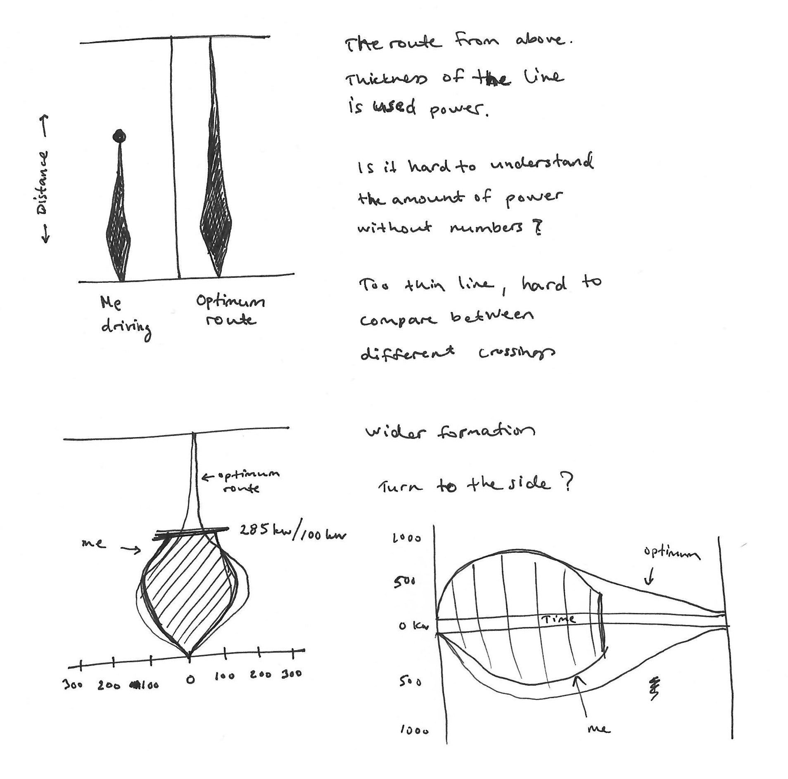
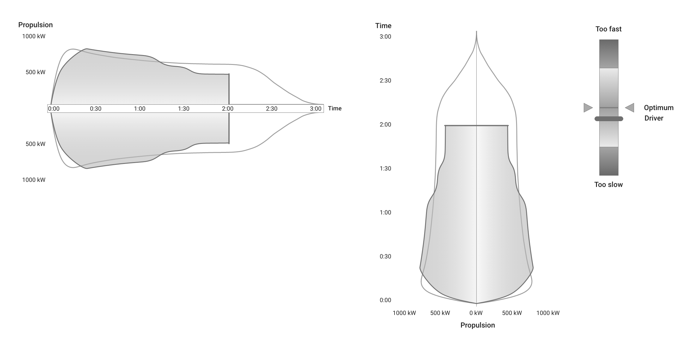
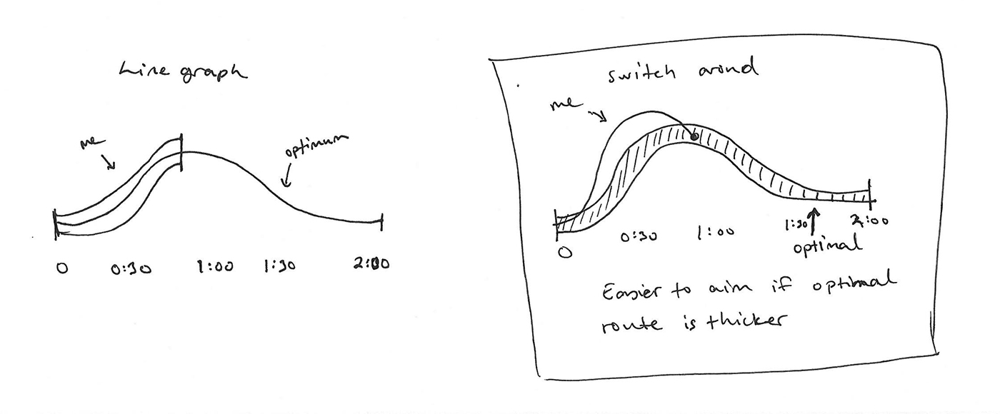
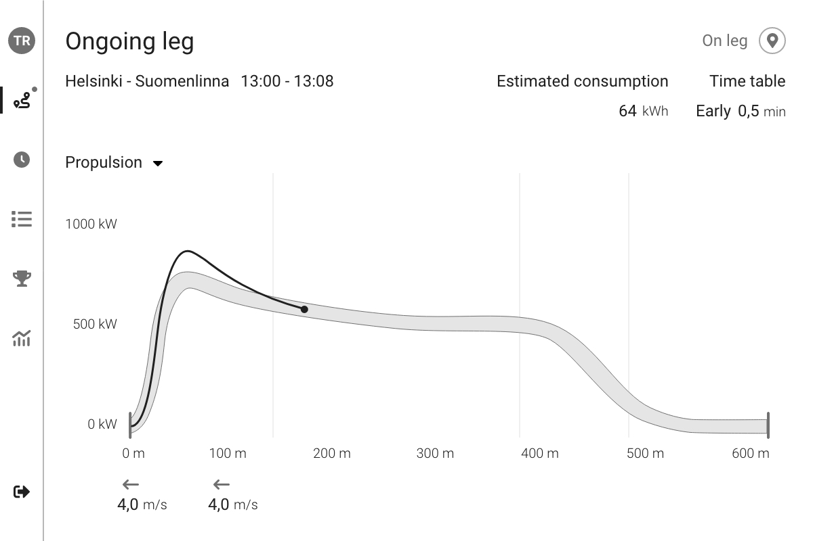
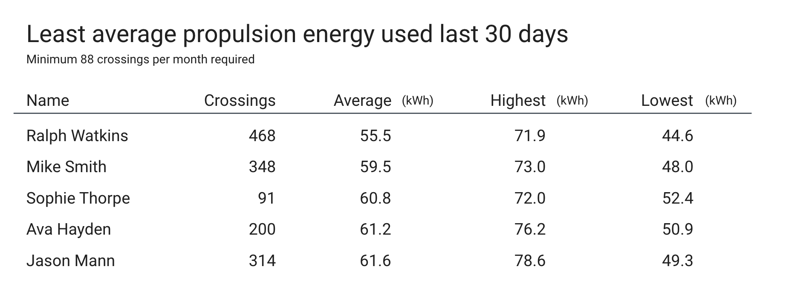
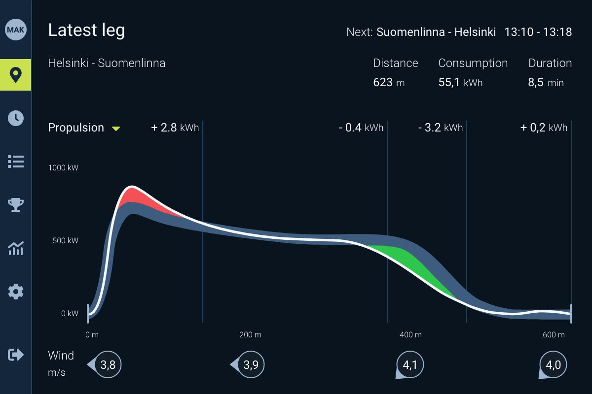

Gamifying Efficiency
#B2B
#Finferries
How to guide ferry captains to navigate routes with maximum efficiency while reducing energy use and CO₂ emissions and keeping schedules on track?
Team
Designer
Project manager / Developer
My contribution
Research
User flows
Wireframes
UI + Visual design
Accessibility
Prototype
Research
When working on the ferry navigation system project, I didn’t have the opportunity to interview end-users directly. Despite this limitation, I conducted research of vehicles control visualisations and gained valuable insights by visiting a ferry’s bridge.
Observations from the Ferry Bridge Visit
During my visit to the bridge, I observed the screens and interfaces used by the captains. High-contrast UIs dominated the displays, ensuring clear visibility in varying light conditions. One surprising insight was the captains’ preference for dark mode, even during daylight hours. This preference was based on reducing eye strain and maintaining focus over extended periods of operation.
Power Utilization Visualizations
Critical aspect of the system is helping captains understand when they are using the optimal amount of throttle to drive the ferry. My research included studying different types of common tools and techniques used in driving vehicles, such as attitude indicator in aviation and ship's throttle handle. I investigated various approaches to visualize power efficiency, considering options like soundwaves and line graphs.
Sketching and wire framing
The goal was to create a visual aid that was both straightforward and actionable, ensuring captains could make adjustments quickly and confidently.
I tested visualisations like soundwaves and throttle handle. These were interesting, but seemed unnecessarily complicated way to visualise power consumption. In the end, line diagram style of visualisation was easiest to understand. It easily contains information of used amount of power in travelled time or distance.


In the end I used modified visualisation of a line graph. The diagram stayed easy to read also when I added the two lines, one for optimum route and one for drivers current performance. As we were thinking to introduce gamification to the system, I made the optimum line thicker. That way it would be easier to aim users line to match the area of optimum performance.

Weather has the biggest effect on power usage while on route. We should also show current wind speed and direction.

We wanted to try gamification for nudging drivers to compete each other for best possible energy save. So we created a statistics page with leaderboard. The board contains drivers that operate the same route and vessel, so the used power numbers are comparable.

Prototyping and iterating
I created the first version of the design with dark theme. I tested the color contrasts in different lighting situations from bright sun light to pitch black night.

The UI was coded a bit differently and to different aspect ratio than I designed it, because of various technical reasons. I adapted and made some visual changes to the design. Main aspects were still the same and I could make the UI work.

I got feedback that texts are too small to read from a distance. It turned out that the selected tablet for the software was smaller and placed further away from captains chair than we thought. So I adjusted the size of all the elements that a captain needs to see from afar. Some pages have so much info that they could not be made much smaller, but the content of those pages are anyway studied when the user is not driving and can take the tablet to his hands. Main view is the energy consumption page, and that is still easy to read from the distance.
Outcomes and lessons learned
At first drivers were wary for the reasons why the new screen is needed at all. But after they used it for a while, most of them now drive better. Most importantly, energy consumption and CO2 emissions decreased by as much as 28%. If they switch to a new route, they adapt and learn faster with the app.
I needed to change the sizing and compositions of the elements for a few times. We gained more info of the hardware and surroundings as we went along and the coded version was done on some old version of similar UI. Development and design needed to find a common ground - which I think we managed quite well.
After a few months of use, we learned that users do not like the leaderboard. The same guys are always on top, and that’s not nice for those that can’t beat them. There are not that many captains driving the same route and vessel, so that might be the main reason for score board to be static. And the captains being rough men, the last people in the list get to hear about it all the time. In the future I’ll be more careful when adding features that persuades users that know each other to openly compete on their work. It needs a bigger group of users and suitable environment to have better chances of working. Nevertheless, the captains still keep competing against themselves and improving in their work.